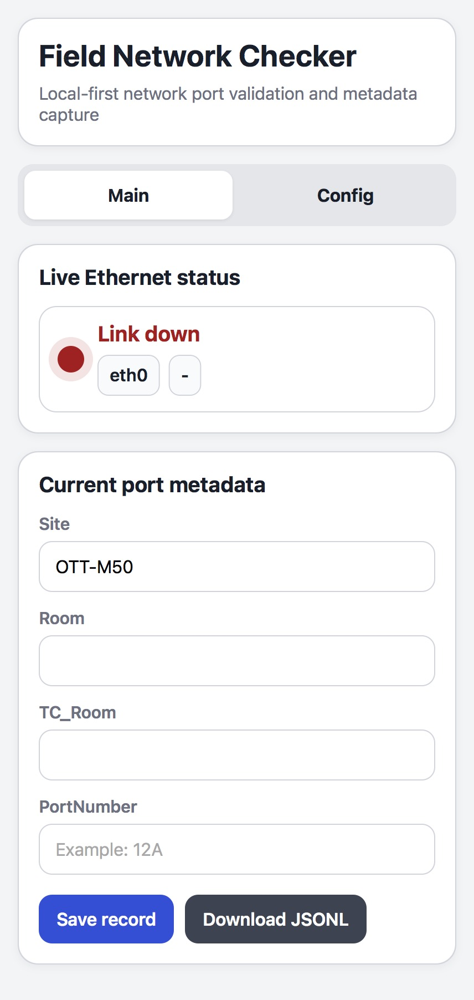
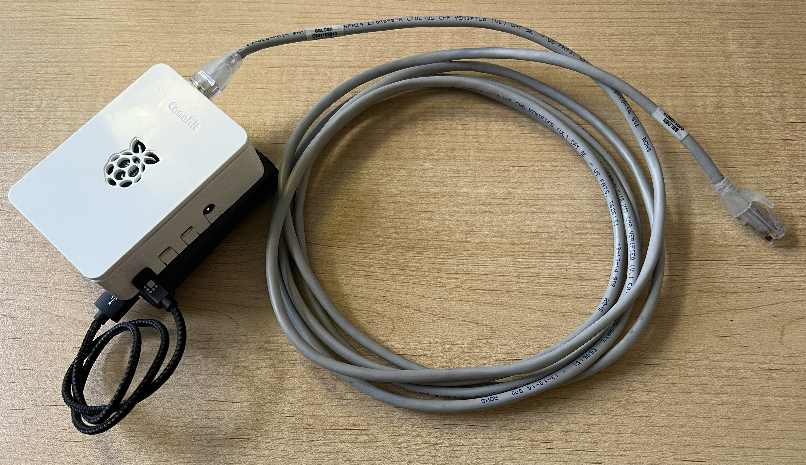
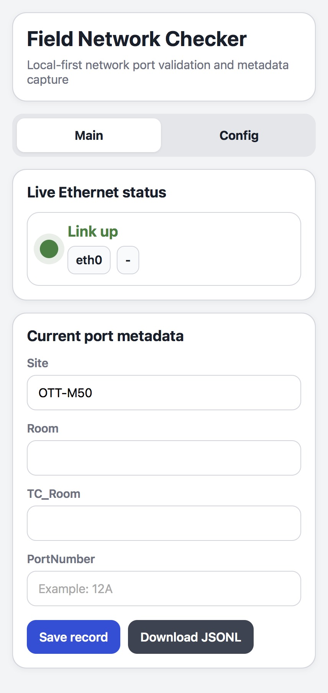
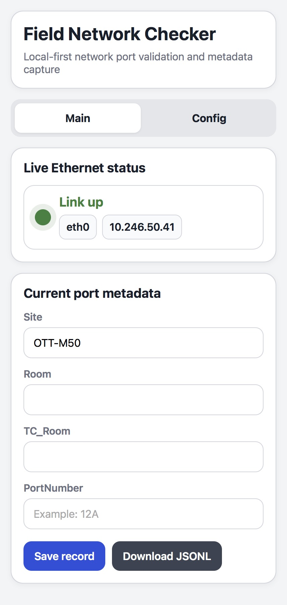
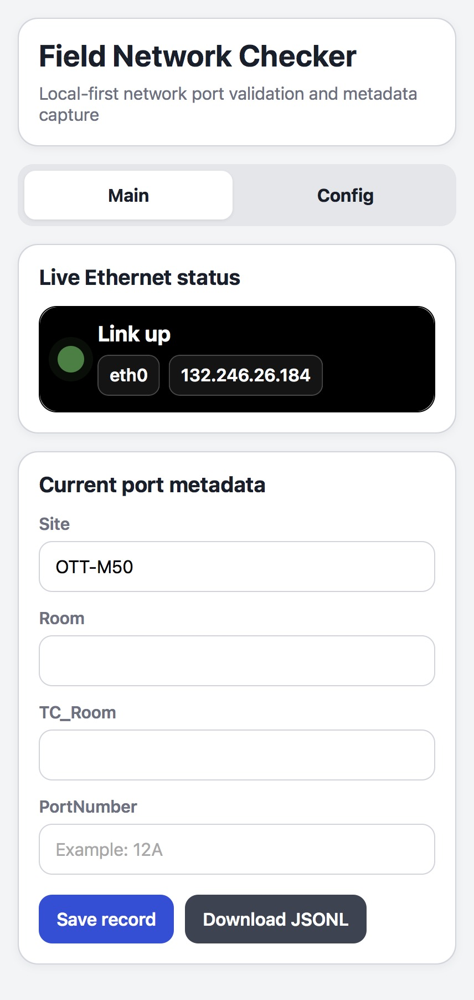

Link down
No active Ethernet connection. The interface remains visible and the IP stays empty.

Local-first network port validation and metadata capture for field work.
When you test a wall port in a building, you need an answer fast. Is the link active, did DHCP respond, and did the port land on the expected network segment?
Field Network Checker turns that into an immediate visual check, then lets you capture room and port metadata before moving to the next jack.
If the app shows Status unavailable, the device could not read live status from the host at that moment, which is different from an ordinary link-down result.

No active Ethernet connection. The interface remains visible and the IP stays empty.

Physical link is active, but no DHCP lease is present yet.

The port is live and assigned an address, but it is not on the expected legacy prefix.

The assigned address matches the target legacy pattern, giving a quick visual confirmation on site.
This amber state means the device could not read live Ethernet or IP status from the host. Treat it as a temporary read problem, not the same as link down.
Read the step-by-step guide for using Field Network Checker in the field.
Open PDF guide1. Connect the device to a wall port.
2. Watch the live Ethernet state update.
3. If the app shows Status unavailable, retry the check or inspect the device and interface state before deciding the wall port is down.
4. Confirm whether the assigned IP matches the expected network.
5. Enter site, room, telecom room, and port number.
6. Save the record and export JSONL for later consolidation.
View project README